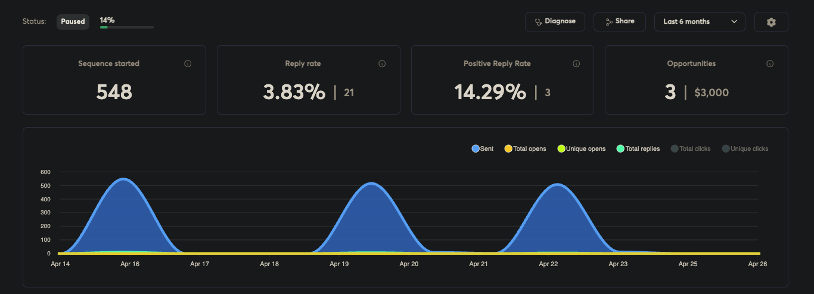

The campaign

About the client
RESPILON's nanofiber technology has applications across filtration, protective materials, health, pharma, defence, and industrial R&D.
That wide market surface was the core problem: not every "relevant" company was actually worth a conversation, and a broad list would have created noise instead of pipeline.
The objective
Find where the technology had a believable commercial reason to matter, and open only those conversations: a pilot, a technical evaluation, a distribution conversation, or a supply agreement.
What we did
Build the route around signals
Category fit, product surface, technical use case, industrial relevance, filtration and protection needs, and R&D activity: signals, not volume.
Anchor every introduction to a use case
Each conversation was opened around a specific commercial application of the technology, so the other side knew exactly why they were in the room.
Skip the rest
Companies without a believable use case never heard from us. In technical markets, restraint is what keeps credibility intact.
The outcome
- 3 qualified introductions routed in approximately 43 days
- Every introduction anchored to a specific commercial use case
- Signal-led routing replaced broad, volume-based outreach
When the use case is specific, the door opens.